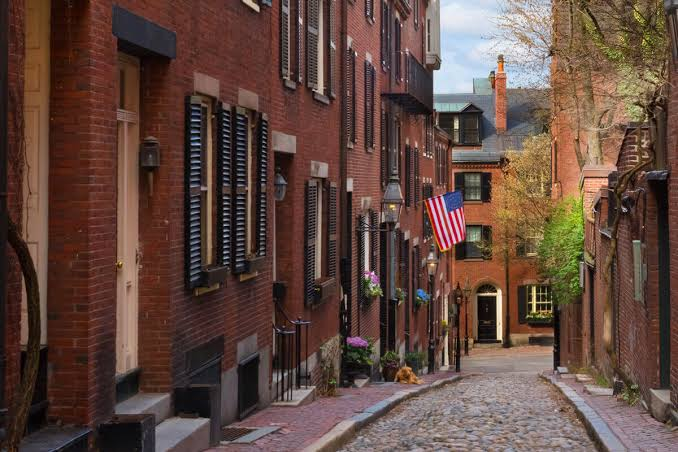

BOOK NOW"That's all I claim for Boston - that it is the thinking center of the continent, and therefore of the planet."
— Oliver Wendell Holmes Snr
Morning | 2 Hours | Open to 12 Guests
A journey across the Shawmut peninsula to the made land of Boston's Back Bay.
"The North End smells like garlic, history, and happiness."
— Unknown
Lunchtime | 2 Hours | Max 6 Guests
A unique experience of the past and present of Boston's vibrant 400-year-old North End ("Little Italy"). Bring your appetite and cash!
"That's where you'll find me along with the lovers, muggers, and thieves. Oh, but they're cool people."
— The Standells
Early Evening | 2 Hours | Open to 12 Guests
Explore the darker side of Boston's history on a tour of our beautiful Beacon Hill neighborhood.
"It was from these shores that the vision of a new nation conceived in liberty was born, and it must be from these shores that liberty must be preserved. "
— Dr. Martin Luther King Jr.
Afternoon | Open to 12 Guests
We all want to change our world. So what does the course of the American Revolution in Boston have to teach us about how to do that - collectively and individually?
What would it take for the people of Boston to rise up - again - and restore the possibilities and promise of American Independence?
By the end of this tour, you'll have your own revolutionary plan.